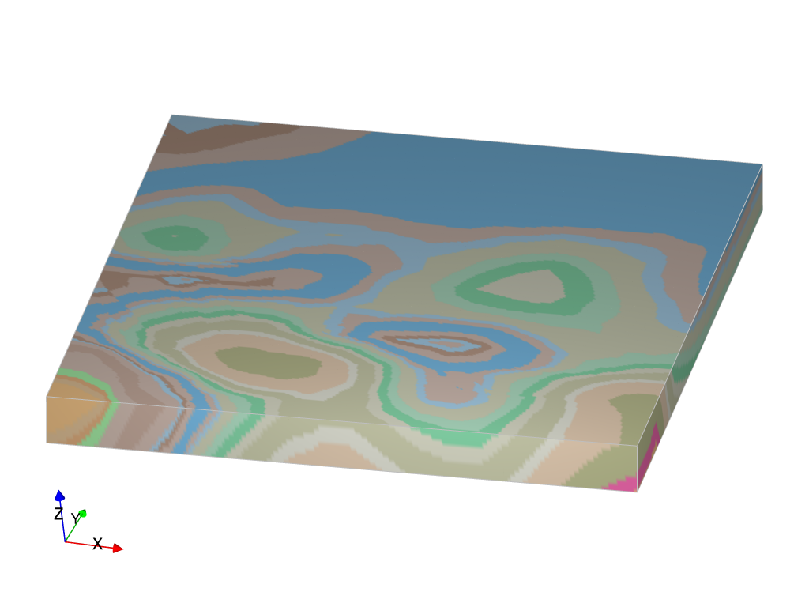

Loop Structural¶
Loop structural is an open source 3D modelling library providing access to multiple interpolation schemes with a high level and easy to use API for creating geological models. The library has been written for the Loop platform by Lachlan Grose at Monash University.
Loop is an open source 3D probabilistic geological and geophysical modelling platform, initiated by Geoscience Australia and the OneGeology consortium. The project is funded by Australian territory, State and Federal Geological Surveys, the Australian Research Council and the MinEx Collaborative Research Centre.
LoopStructural is the forward geological modelling engine for the loop and contains the classes and functions to manage the various elements in a 3D geological model. Including stratigraphy, unconformities, fault and folds. LoopStructural contains three native interpolation algorithms:
Piecewise-linear interpolation :cite:`Frank2007`
Discrete Fold Interpolator :cite:`Laurent2016,Grose2017,Grose2018,Grose2019`
Finite Difference Interpolation :cite:`Irakarama2020`
and a wrapper for the generalised radial basis functions provided by Surfe :cite:`Hillier2014`.
LoopStructural API |